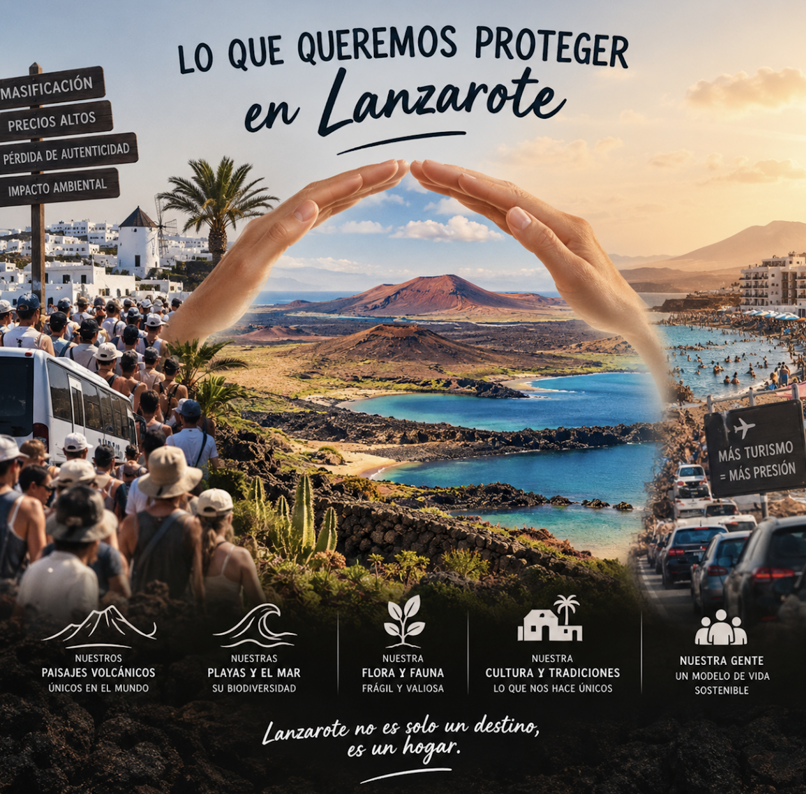
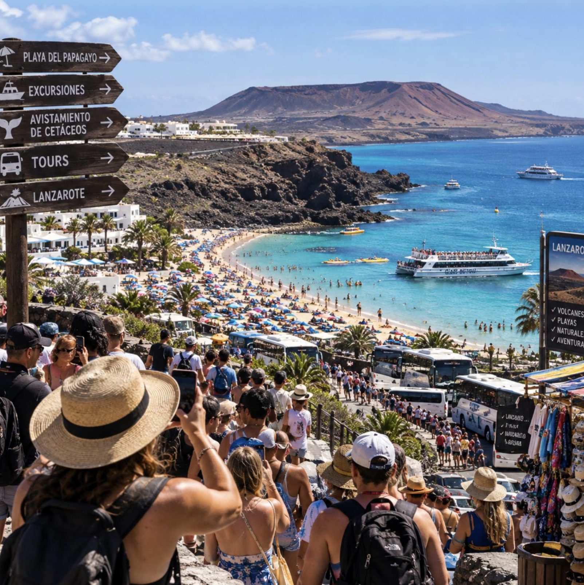

¿Qué queremos proteger?
Nuestra isla tiene una identidad propia que debemos cuidar. Queremos dar visibilidad a aquello que nos representa y evitar que nuestras raíces queden en el olvido.

1. Patrimonio y tradiciones
Las tradiciones forman parte de nuestra historia. Queremos conservar las fiestas populares, la arquitectura tradicional, la artesanía y las costumbres que hemos heredado de nuestros antepasados.
Proteger nuestro patrimonio significa mantener viva nuestra cultura y transmitirla a las nuevas generaciones.
2. Artistas y productos locales
Detrás de cada producto local hay personas, esfuerzo, tradición y conocimiento.
Queremos apoyar a los agricultores, pescadores, artesanos y pequeños productores de Lanzarote, dando a conocer su trabajo y la importancia de consumir productos de nuestra tierra.
3. Gastronomía canaria
La gastronomía es una parte fundamental de nuestra identidad. Los platos tradicionales cuentan historias sobre nuestra tierra y nuestra gente.
Queremos dar a conocer recetas como las papas arrugadas con mojo, el sancocho canario, el gofio y los postres tradicionales de las islas.
4. Un turismo que respete nuestra isla

El turismo es importante para Lanzarote, pero debe desarrollarse de una forma responsable y respetuosa con el territorio y sus habitantes.
La masificación turística puede aumentar la presión sobre los espacios públicos, el transporte, la vivienda y los recursos naturales.
Apostamos por un turismo sostenible que valore nuestra cultura, cuide el medioambiente y respete la vida cotidiana de la población local.
Nuestra misión
En Huella Isleña creemos que el futuro de Lanzarote no debe construirse olvidando su pasado.
Queremos proteger nuestras raíces, apoyar a nuestra gente y conservar todo aquello que hace que nuestra isla sea diferente.